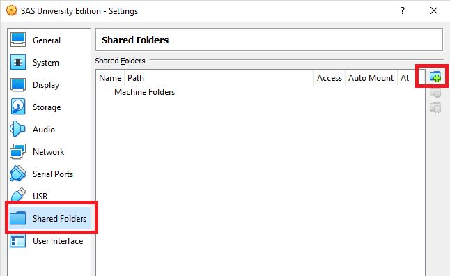
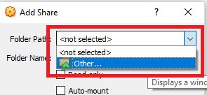
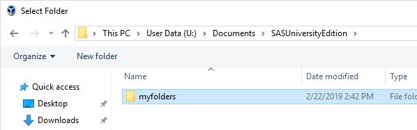
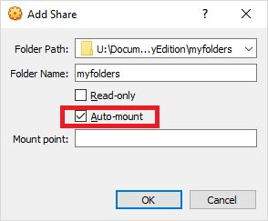
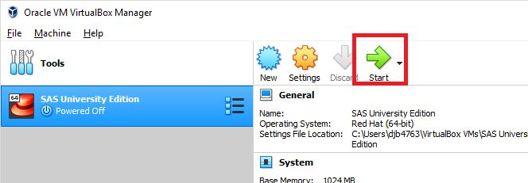

Saunders SAS University Portal
SAS University
In order to use SAS University, there are several steps you must follow to configure the lab computer to use the software. Here's how:
Start by searching for File Explorer in the Start Menu and open it.
Type in \\main in the address bar and press enter

Go to the Shares, SCB, SCB_Public, VirtualAppliances, SASUE folder
Double-click on setup_folder.
This will setup a folder needed for the virtual machine to work. Once you have done this on any lab computer, you won’t have to do this step again.
Double-click on the vm_2185 file to begin the import process.

Click Import.

The import will take a minute or two.
Once the import is complete, select the SAS University Edition system and click on Settings.

Click on Shared Folders and then the plus folder icon in the upper-right.
Click the drop down arrow and then Other...
Navigate to U:\Documents\SASUniversityEdition, select myfolders and click Select Folder.
Check Auto-mount and click OK.
Click OK again and then click Start to start the virtual machine.
It will take a few minutes to start, but once up and running you can go to http://localhost:18080 in any web browser to access the software.
When you are done, close the browser and the Virtual Machine window. Your files will be saved in your Documents folder under SASUniversityEdition\myfolders.